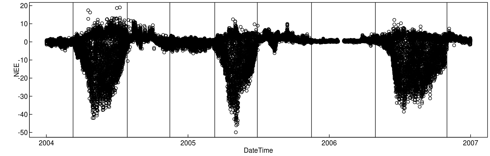

#isDevelopMode <- TRUE
if (!exists("isDevelopMode")) library(REddyProc)
set.seed(0815) # for reproducible resultsFirst, the data is loaded. This example uses data that has been
downloaded from http://www.europe-fluxdata.eu and preprocessed by
fLoadEuroFlux16, where the DateTime Column has been
created, and the variables renamed to the BGC-convention (e.g. Tair
instead of Ta).
## DateTime NEE Ustar
## Min. :2004-01-01 00:30:00 Min. :-49.919 Min. :0.0000
## 1st Qu.:2004-10-01 00:22:30 1st Qu.: -1.864 1st Qu.:0.0640
## Median :2005-07-02 00:15:00 Median : 0.635 Median :0.1490
## Mean :2005-07-02 00:15:00 Mean : -1.935 Mean :0.1884
## 3rd Qu.:2006-04-02 00:07:30 3rd Qu.: 1.834 3rd Qu.:0.2800
## Max. :2007-01-01 00:00:00 Max. : 19.008 Max. :2.0450
## NA's :21849 NA's :1149
## Tair rH Rg
## Min. :-16.710 Min. : 15.87 Min. : 0.00
## 1st Qu.: 3.360 1st Qu.: 66.61 1st Qu.: 0.00
## Median : 9.970 Median : 79.10 Median : 2.04
## Mean : 9.664 Mean : 75.24 Mean : 124.71
## 3rd Qu.: 15.520 3rd Qu.: 87.07 3rd Qu.: 176.03
## Max. : 34.680 Max. :100.00 Max. :1046.03
## NA's :1VPD was not given with the original dataset and is calculated from Tair and rH.
DEGebExample$VPD <- fCalcVPDfromRHandTair(DEGebExample$rH, DEGebExample$Tair)
EProc <- sEddyProc$new('DE-Geb', DEGebExample, c('NEE','Rg','Tair','VPD', 'Ustar'))
EProc$sSetLocationInfo(LatDeg = 51.1, LongDeg = 10.9, TimeZoneHour = 1) #Location of GebeseeThe site is a crop site. The harvesting times are visible as sharp edges in the plots of NEE.
The micrometeorological conditions differ between the different
cropping periods, because the friction at the surface differs. Also not
the cropping periods do not correspond very well to seasons. Hence, for
the estimation of uStar-Thresholds, we apply a user-defined splitting of
uStar-seasons. With function usCreateSeasonFactorYdayYear
we provide the starting points of the seasons.
Note that, here, the seasons are not constrained within one calendaryear. There are other variants of a user-specified season that do respect calendaryear boundaries, or that let seasons start at the same day each year.
seasonStarts <- as.data.frame( do.call( rbind, list(
c(70,2004)
,c(210,2004)
,c(320,2004)
,c(70,2005)
,c(180,2005)
,c(320,2005)
,c(120,2006)
,c(305,2006)
)))
seasonFactor <- usCreateSeasonFactorYdayYear(
DEGebExample$DateTime - 15*60, starts = seasonStarts)
plot( NEE ~ DateTime, DEGebExample )
seasonStartsDate <- fConvertTimeToPosix( data.frame(Year = seasonStarts[,2]
, DoY = seasonStarts[,1], Hour = 0.25), 'YDH'
, Year = "Year", Day = "DoY", Hour = "Hour")
abline( v = seasonStartsDate$DateTime)
The user-specific seasoning is provided to the gap-filling by the
argument seasonFactor.
(uStarTh <- EProc$sEstUstarThold(seasonFactor = seasonFactor))## aggregationMode seasonYear season uStar
## 1 single NA <NA> 0.16041176
## 2 year 2004 <NA> 0.13500000
## 3 year 2005 <NA> 0.16041176
## 4 year 2006 <NA> 0.25094444
## 5 season 2004 2004001 0.13500000
## 6 season 2004 2004070 0.12037500
## 7 season 2004 2004210 0.08925000
## 8 season 2005 2004320 0.16041176
## 9 season 2005 2005070 0.12533333
## 10 season 2005 2005180 0.13473214
## 11 season 2006 2005320 0.04842361
## 12 season 2006 2006120 0.06966667
## 13 season 2006 2006305 0.25094444
#EProc$useSeaonsalUStarThresholds()
# estimation can be inspected by plotting the saturation of NEE with UStar
# for the temperatures of one season
#EProc$sPlotNEEVersusUStarForSeason( levels(uStarTh$season)[2] )Note that there is an estimate for each season. Further, an annual estimate is obtained by taking the maximum across the seasons, and the overall estimate is the mean across the years.
By default the gap-filling uses annually aggregated estimates of
uStar-Threshold. This usually works for sites with continuous vegetation
cover. For the crop-site of this example, we will use a different
threshold for each of the defined seasons, by calling
sEddyProc_useSeaonsalUStarThresholds before gapfilling.
EProc$useSeaonsalUStarThresholds()
EProc$sGetUstarScenarios()## season uStar
## 5 2004001 0.13500000
## 6 2004070 0.12037500
## 7 2004210 0.08925000
## 8 2004320 0.16041176
## 9 2005070 0.12533333
## 10 2005180 0.13473214
## 11 2005320 0.04842361
## 12 2006120 0.06966667
## 13 2006305 0.25094444
EProc$sMDSGapFillAfterUstar('NEE', FillAll = FALSE, isVerbose = FALSE)With a lower estimate of uStar threshold, more records with lower NEE are kept in the dataset instead of marked as gaps. Therefore annual estimate of NEE will decrease with lower uStar Threshold. Also the partitioning of the net-flux to GPP and Reco is sensitive to inclusion of data at dawn period with conditions of low uStar.
In order to quantify this uncertainty, a lower, median and upper estimates of uStar are obtained from a bootstrapped sample of half-hourly NEE measurements. The Gap-Filling and computation of derived quantities such as GPP are then repeated for different estimates of the uStar Threshold.
EProc <- sEddyProc$new('DE-Geb', DEGebExample, c('NEE','Rg','Tair','VPD', 'Ustar'))
EProc$sSetLocationInfo(LatDeg = 51.1, LongDeg = 10.9, TimeZoneHour = 1) #Location of Gebesee
# here, because of processing time only 30 samples instead of 100, and 10% and 90%
# percentile instead of default 5%,50%, and 95% with 100 samples
EProc$sEstimateUstarScenarios(
seasonFactor = seasonFactor, nSample = 30L, probs = c(0.1,0.9))
#(uStarScens <- usGetSeasonalSeasonUStarMap(
# EProc$sGetEstimatedUstarThresholdDistribution()
#))
#EProc$sSetUstarScenarios(uStarScens)
EProc$useSeaonsalUStarThresholds()
EProc$sGetUstarScenarios()## season uStar U10 U90
## 5 2004001 0.13500000 0.11874009 0.15412045
## 6 2004070 0.12037500 0.08538636 0.12177250
## 7 2004210 0.08925000 0.09386250 0.16746306
## 8 2004320 0.16041176 0.09177434 0.17215564
## 9 2005070 0.12533333 0.10400556 0.16937143
## 10 2005180 0.13473214 0.08419405 0.13203875
## 11 2005320 0.04842361 0.04905486 0.10056250
## 12 2006120 0.06966667 0.06113059 0.09647238
## 13 2006305 0.25094444 0.12240556 0.25735196After setting the uStar scenarios, they will be used by method
sMDSGapFillUStarScens.
EProc$sMDSGapFillUStarScens('NEE', FillAll = FALSE)Additional output columns are produced for each uStar quantile.
## [1] "NEE_uStar_f" "NEE_U10_f" "NEE_U90_f"Several methods provide processing steps for all scenarios. In
addition, method sApplyUStarScen calls a user-specified
function repeatedly with a modified argument suffix. For
example, the flux partitioning across all threshold scenarios can be
invoked by the following code to produce several GPP estimates.
EProc$sMDSGapFill('Tair', FillAll = FALSE)
EProc$sApplyUStarScen( EProc$sMRFluxPartition )
#grep("U10", colnames(EProc$sExportResults()), value = TRUE)
grep("^GPP.*_f$", colnames( EProc$sExportResults()), value = TRUE )## [1] "GPP_U10_f" "GPP_U90_f" "GPP_uStar_f"The package also provides another method of estimating the point
where NEE saturates with increasing uStar. With the ChangePointDetection
(CPT) method, the data is not binned by classes of uStar but the
changepoint is estimated based on the entire subset within one seasons
and one temperature class. The user invokes this method by specifying
argument
ctrlUstarEst.l = usControlUstarEst(isUsingCPTSeveralT = TRUE)
to EstUstarThold or
sEstUstarThresholdDistribution.
The CPT method is usually yields higher thresholds and marks more data as Gap.
EProc <- sEddyProc$new(
'DE-Geb', DEGebExample, c('NEE','Rg','Tair','VPD', 'Ustar'))
resUStar <- EProc$sEstUstarThold(
ctrlUstarEst = usControlUstarEst(isUsingCPTSeveralT = TRUE)
, seasonFactor = seasonFactor
)
#(uStarThCP <- usGetSeasonalSeasonUStarMap(resUStar))
EProc$useSeaonsalUStarThresholds()
EProc$sGetUstarScenarios()## season uStar
## 5 2004001 0.4940012
## 6 2004070 0.3167250
## 7 2004210 0.2220000
## 8 2004320 0.4977500
## 9 2005070 0.3361000
## 10 2005180 0.3029803
## 11 2005320 0.3908000
## 12 2006120 0.2138062
## 13 2006305 0.3544000